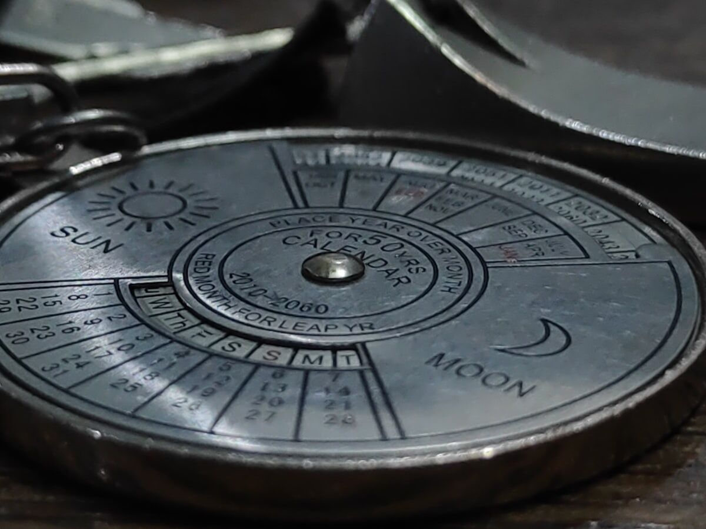

Trusted by thousands of callers nationwide
Career Astrology Reading by Phone - Let the Planets Guide Your Path, 24/7
A career astrology reading shows you the work your chart is actually built for and when the timing favors a move. Every astrologer on our line is hand-vetted by our master psychics - connect in under 60 seconds. Your first minute is $1 and you can hang up anytime.
- Hand-vetted readers
- Available 24/7
- Hang up anytime
Call and speak with a live astrologer for a career astrology reading that points at the work you're wired for instead of the job you fell into. No appointment, no waiting - first-time callers get an introductory rate of $1 per minute, or 15 minutes for $10, and you can hang up the moment you have your answer.

What Is a Career Astrology Reading?
A career astrology reading interprets the part of your chart that governs work and purpose: the 10th house and midheaven (your public path and calling), Saturn (where you build mastery the slow, real way), the 6th house (daily work and routine), and the transits moving across them now. It isn't a generic "Capricorns make good managers" line. It's the personal version - what kind of work your specific chart thrives in, what keeps tripping you up, and when the sky is actually backing a change.
What Can a Career Astrology Reading Tell Me?
The work that genuinely fits your wiring (not just what you're trained in), your natural strengths and where they shine, the recurring professional pattern you can't seem to shake, and the timing of openings and pressure based on transits like Saturn returns, Jupiter's path through your 10th, and eclipses on your career axis. If you're stuck, it shows why. If you're deciding, it shows what each road asks of you.
How Does a Career Astrology Reading Work by Phone?
Your astrologer calculates your chart from your birth details on their end and walks you through it live. Astrology doesn't depend on the room - the chart reads the same from anywhere. You give your date, time, and place of birth, your astrologer pulls the wheel and current transits, and they translate the 10th house, midheaven, Saturn, and the rest into plain direction for your work life, pausing for your questions.
Can Astrology Tell Me Whether to Change Jobs?
It can show you the things the pros-and-cons list can't: what's really driving the urge to leave (growth, burnout, a Saturn lesson, or a true misfit), whether your current transits actually support a move or counsel patience, and what each path tends to demand of you. What it won't do is decide for you - the choice stays yours. But walking in with the chart's perspective turns a fearful, looping decision into a clear one. That clarity is usually worth more than a snap yes or no, because it holds up after you hang up.
Who Is the Best Astrologer to Call for Career?
The best astrologer for work questions is one who reads ambition and timing with both precision and realism - honest about a hard Saturn transit, not doom about it. Every reader on our line is hand-vetted by our master psychics, so you're not gambling on a stranger from a directory. Say you want a career astrology reading and we'll match you with the astrologer whose strength is vocational work, usually in under 60 seconds. If the connection isn't right, hang up anytime, and our 100% satisfaction promise stands behind the call.
What Do I Do If My Chart Shows a Hard Career Transit?
Steady yourself - a tough transit (a Saturn return, a Pluto square to your midheaven) is a heads-up, not a sentence. These periods feel heavy because they're asking you to build something real or release what isn't working, and they pass. Astrology describes the weather and the wiring, not a locked fate. A skilled astrologer won't name a hard transit and go quiet - they'll explain how it actually shows up at work and how to move with it instead of bracing against it. If the deeper question is about money pressure under the job, your astrologer may suggest a money and prosperity reading.
Common Reasons People Get a Career Astrology Reading
Callers reach for career astrology at the crossroads:
"What work am I actually built for?"
The midheaven and 10th-house story.
"Is now the right time to make a move?"
What the transits support.
"Why do I keep hitting the same wall?"
The Saturn or pattern behind it.
"Should I go out on my own?"
What your chart says about the leap.
"When does advancement open up?"
Supported windows, not promises.
"Why does success feel so hard for me?"
The block, explained kindly.
Can Astrology Predict When I'll Get a Promotion?
It can show you when the wind is at your back - not a guaranteed date with a title attached. Astrology reads career timing as supported windows: periods when Jupiter, a benefic transit, or a progression activates your 10th house and advancement becomes far more likely if you put yourself forward. Any astrologer promising "you'll be promoted in March" is overselling. A good one shows you the favorable stretch and how to position yourself in it, which beats a date you'd just wait on. For the background on chart structure, see the astrology overview.
Career Astrology vs. Career Tarot vs. Money Reading
They overlap but lead differently. A career astrology reading reads your chart for the work you're built for and the timing of moves. A career tarot reading uses the cards for a specific decision in front of you now. A money and prosperity reading focuses on income and abundance blocks. Many callers start with career astrology for the big-picture direction, then use tarot for the immediate decision.
How to Prepare for Your Career Astrology Reading
Have your birth date, time, and city ready - time sharpens the 10th house and midheaven the most, but an approximate one still works. Decide what you most want: direction, timing on a move, or why a pattern repeats - so the reading goes deep. Come open rather than seeking permission for what you'd already decided. And the practical part: first-time callers pay $1 per minute, you can do 15 minutes for $10, and you can hang up the moment you have what you need.
Stop Guessing About Your Path
Your chart has been pointing at the work you're built for the whole time. Let an expert read it. We'll connect you with the right hand-vetted astrologer in under 60 seconds. $1/min first call · 15 minutes for $10 · hang up anytime · 100% satisfaction promise.
Call (888) 920-6662 NowWhat Callers Say About Their Career Astrology Reading
"She read my midheaven and Saturn and described the exact career I'd been too scared to pursue. Six months later I'm doing it. That call was a turning point."
"I was about to quit in a panic. He showed me it was a Saturn transit and what it was really asking. I stayed, did the work, and it paid off. Honest and grounded."
Explore every reading type on our phone psychic readings hub, or take a specific decision to a career tarot reading.
Career Astrology Reading - Frequently Asked Questions
What is a career astrology reading?
It interprets the work-and-purpose parts of your chart - the 10th house and midheaven, Saturn, the 6th house, and current transits - for professional direction.
What can it tell me?
The work that fits your chart, your strengths and ambitions, why patterns repeat at work, and the timing of openings or pressure.
Can astrology tell me whether to change jobs?
It shows what's driving the urge, whether timing supports a move, and what each path asks - so you decide with clarity. The choice stays yours.
Does it work over the phone?
Yes. Your astrologer calculates and interprets your chart on their end while discussing it live; distance doesn't affect it.
How much does it cost?
First-time callers pay $1/min, or 15 minutes for $10. Returning callers pay the per-minute rate, and you can hang up anytime.
Can astrology predict when I'll get a promotion?
It reads timing as supported windows, not guaranteed events - when transits favor advancement and how to position for it.
What if I don't know my exact birth time?
Still useful. Time sharpens the 10th house and midheaven; your astrologer can work with an approximate time or focus elsewhere.
How often should I get a career astrology reading?
Your natal chart is fixed, but transits shift - many callers return at a Saturn return, a job change, or a major career transit.
Get Your Career Astrology Reading Now
Here's what happens when you call: you're connected to a hand-vetted astrologer in under 60 seconds, they read your career chart and transits, and you hang up knowing your direction.
- Hand-vetted astrologer
- Connected in under 60 seconds
- $1/min first call · 15 min for $10
- Hang up anytime
- 100% satisfaction promise